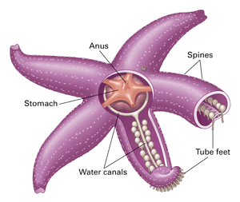
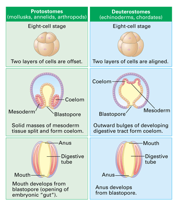

Objectives
- Describe the characteristics of echinoderms.
- Compare and contrast three different classes of echinoderms.
- Explain the difference between protostomes and deuterostomes.
Key Terms
Annelids and mollusks are part of one large evolutionary branch of the animal kingdom. Animals such as sea stars and sea urchins represent a very different evolutionary branch—the branch that also includes you.
The Body of an Echinoderm
Sea urchins, sea stars, and sea cucumbers are all slow-moving marine animals that belong to phylum Echinodermata. Echinoderms lack body segments, and in most adult forms the external parts of the animal radiate from the center like spokes of a wheel.
Most echinoderms have a rough and spiny surface (echino- means "spiny" or "prickly"; -derm means "skin"). The spininess of a sea star or sea urchin comes from hard spiny plates embedded under the skin. The spines and plates are actually parts of a hard internal skeleton, an endoskeleton.
A unique feature of echinoderms is the water vascular system, a network of water-filled canals (Figure 23-20). The water vascular system branches into structures called tube feet that function in locomotion, feeding, and respiration (gas exchange with the environment). For example, the tube feet of sea stars have suction-like structures that are used to pull the animals over the seafloor. Sea stars and some other echinoderms have strong powers of regeneration. Tube feet and whole arms that are damaged or lost are readily regrown. One group of echinoderms, the sea cucumbers, can even regenerate some of their internal organs, such as parts of the digestive system.
|  |
Figure 23-20
The unique water vascular system of echinoderms includes tube feet. Each tube foot has a bulb that can pump water into and out of the foot. When water is pumped out, the suction cup at the end of the foot contracts and grips the surface of objects. A valve-like opening called the madreporite allows seawater to fill the water vascular system. |
The larval stage of an echinoderm is very different from the adult stage. Echinoderm larvae are bilaterally symmetrical, while the adults appear to show radial symmetry. However, close inspection of adult echinoderms reveals small features that make them bilateral, not radial. For example, the opening of the sea star's water vascular system (the madreporite) is not central, but is located off to one side.
Diversity of Echinoderms
The 7,000 or so known echinoderm species are classified into 6 classes: the sea urchins (class Echinoidea), sea stars (class Asteroidea), brittle stars (class Ophiuroidea), sea lilies (class Crinoidea), and sea cucumbers (class Holothuroidea). The sixth group, sea daisies (class Concentricycloidea), was recently discovered. It consists of at least two species of disk-shaped animals about 1 cm in diameter. Sea daisies live on waterlogged wood deep in the sea.
Protostomes and Deuterostomes
Echinoderms, annelids, and mollusks are coelomates, meaning they have a body cavity that is a true coelom. However, the coelom of echinoderms develops in the embryo differently than in annelids and mollusks. This difference in coelom development can be used to divide coelomates into two groups: protostomes and deuterostomes. This division is key to understanding how some animals are related to other animals. For example, annelids and mollusks are protostomes. Also included among protostomes is the very large phylum of animals called arthropods. You will read more about arthropods in Chapter 24. In protostomes, the coelom forms from solid masses of cells in the embryo (Figure 23-22).
|  |
Figure 23-22
This diagram depicts the differences in early embryonic development between protostomes, such as mollusks and annelids, and deuterostomes, such as echinoderms and chordates (the phylum that includes humans). |
In deuterostomes, the coelom forms from a portion of the digestive tube of the early embryo. In addition to echinoderms, chordates (the phylum that includes humans) are deuterostomes. This similarity in coelom development during the embryonic stage is important for biologists studying vertebrate origins. Evidence from embryonic development reinforces other evidence in support of the hypothesis that echinoderms are more closely related to chordates than they are to annelids and mollusks.
Concept Check 23.8
1. Describe the function of the water vascular system of echinoderms.
2. Compare and contrast sea cucumbers with sea stars.
3. Describe embryonic evidence that indicates echinoderms are more closely related to humans than they are to mollusks.